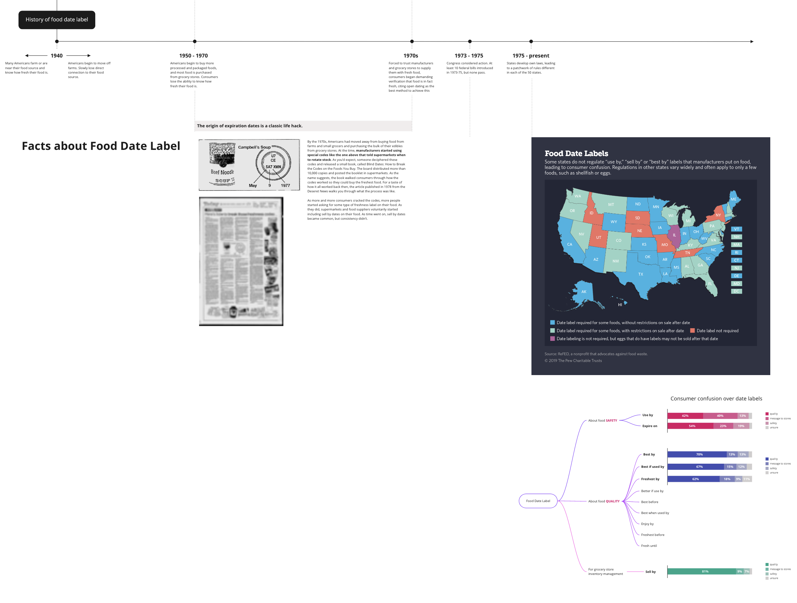

Refine the relationship between human and food
Introduction
Food Preservation
Food Storage
Individual Behavior
Government Policy
New Technology
Government Policy
Past:
Policy during World War I & World War II
Present: Confusion over food date label
